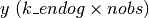

statsmodels.tsa.statespace.kalman_smoother.KalmanSmoother¶
-
class
statsmodels.tsa.statespace.kalman_smoother.KalmanSmoother(k_endog, k_states, k_posdef=None, results_class=None, **kwargs)[source]¶ State space representation of a time series process, with Kalman filter and smoother.
Parameters: k_endog : array_like or integer
The observed time-series process
 if array like or the
number of variables in the process if an integer.
if array like or the
number of variables in the process if an integer.k_states : int
The dimension of the unobserved state process.
k_posdef : int, optional
The dimension of a guaranteed positive definite covariance matrix describing the shocks in the measurement equation. Must be less than or equal to k_states. Default is k_states.
results_class : class, optional
Default results class to use to save filtering output. Default is SmootherResults. If specified, class must extend from SmootherResults.
**kwargs
Keyword arguments may be used to provide default values for state space matrices, for Kalman filtering options, or for Kalman smoothing options. See Representation for more details.
Attributes
dtype(dtype) Datatype of currently active representation matrices obs(array) Observation vector:  prefix(str) BLAS prefix of currently active representation matrices time_invariant(bool) Whether or not currently active representation matrices are design endog obs_cov obs_intercept selection state_cov state_intercept transition Methods
bind(endog)Bind data to the statespace representation filter([filter_method, inversion_method, ...])Apply the Kalman filter to the statespace model. impulse_responses([steps, impulse, ...])Impulse response function initialize_approximate_diffuse([variance])Initialize the statespace model with approximate diffuse values. initialize_known(initial_state, ...)Initialize the statespace model with known distribution for initial state. initialize_stationary()Initialize the statespace model as stationary. loglike([loglikelihood_burn])Calculate the loglikelihood associated with the statespace model. loglikeobs([loglikelihood_burn])Calculate the loglikelihood for each observation associated with the statespace model. set_conserve_memory([conserve_memory])Set the memory conservation method set_filter_method([filter_method])Set the filtering method set_inversion_method([inversion_method])Set the inversion method set_smoother_output([smoother_output])Set the smoother output set_stability_method([stability_method])Set the numerical stability method simulate(nsimulations[, measurement_shocks, ...])Simulate a new time series following the state space model smooth([smoother_output, results, ...])Apply the Kalman smoother to the statespace model. Methods
bind(endog)Bind data to the statespace representation filter([filter_method, inversion_method, ...])Apply the Kalman filter to the statespace model. impulse_responses([steps, impulse, ...])Impulse response function initialize_approximate_diffuse([variance])Initialize the statespace model with approximate diffuse values. initialize_known(initial_state, ...)Initialize the statespace model with known distribution for initial state. initialize_stationary()Initialize the statespace model as stationary. loglike([loglikelihood_burn])Calculate the loglikelihood associated with the statespace model. loglikeobs([loglikelihood_burn])Calculate the loglikelihood for each observation associated with the statespace model. set_conserve_memory([conserve_memory])Set the memory conservation method set_filter_method([filter_method])Set the filtering method set_inversion_method([inversion_method])Set the inversion method set_smoother_output([smoother_output])Set the smoother output set_stability_method([stability_method])Set the numerical stability method simulate(nsimulations[, measurement_shocks, ...])Simulate a new time series following the state space model smooth([smoother_output, results, ...])Apply the Kalman smoother to the statespace model. Attributes
conserve_memorydesigndtype(dtype) Datatype of currently active representation matrices endogfilter_conventionalfilter_methodfilter_methodsinversion_methodinversion_methodsinvert_choleskyinvert_luinvert_univariatememory_conservememory_no_filteredmemory_no_forecastmemory_no_likelihoodmemory_no_predictedmemory_optionsmemory_store_allobs(array) Observation vector: obs_covobs_interceptprefix(str) BLAS prefix of currently active representation matrices selectionsmoother_allsmoother_disturbancesmoother_disturbance_covsmoother_outputsmoother_outputssmoother_statesmoother_state_covsolve_choleskysolve_lustability_force_symmetrystability_methodstability_methodsstate_covstate_intercepttime_invariant(bool) Whether or not currently active representation matrices are transition